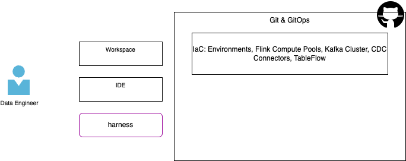

Day to day activities for a Data Engineer with the AI agents¶
As introduced in the methodology chapter, the data engineers have a lot to address during the life of a data streaming processing project. This chapter maps those activities to the tools within this repository and the agent skills to potentially use within an AI harness.
This chapter is structured by use cases, and the other descriptions in this documentation may go deeper in the command references.
The acronymes used are:
| Acronym/Term | Definition |
|---|---|
| DSP | Data Streaming Project. Groups Kafka, schema registry, Flink processing and Tableflow |
Components Involved¶
A Confluent Cloud Data Streaming Processing project includes the following components:

- Some are managed by Site Reliability Engineers using infrastructure as code.
- Most of the streaming logic implementations is done using Flink, and other queries mechanisms
Create a DSP Project¶
- Create a project directory:
- Start your harness CLI or IDE (IBM Bob). If you use an IDE, load the project in your workspace.
-
Execute a prompt in your agent harness or run a command:
Agent prompt using /dbt-project create a dbt project under current folder. use data as a product structure Command uv run sl-dbt init $HOME/dsp-project --type data-product --profile cc_flink
Define / update user's .dbt/profiles.yml¶
The .dbt/profiles.yml is created when running dbt init. But it is possible to reuse connection definition without running this command each time. As an example the profile.yml include the `cc_flink connection as:
cc_flink:
outputs:
dev:
cloud_provider: aws
cloud_region: us-west-2
compute_pool_id: lfcp-1
dbname: j9r-kafka
environment_id: '{{ env_var(''ENVIRONMENT_ID'') }}'
execution_mode: streaming_query
flink_api_key: '{{ env_var(''FLINK_API_KEY'') }}'
flink_api_secret: '{{ env_var(''FLINK_API_SECRET'') }}'
organization_id: '{{ env_var(''ORGANIZATION_ID'') }}'
statement_label: dbt-confluent
statement_name_prefix: dbt-
threads: 1
type: confluent
target: dev
This can be reused between project, as each dbt_project.yml references profile: 'cc_flink'
Manage Flink elements¶
Add data product¶
Data product will help to group Flink pipelines related to the same appplication, same analytics metrics.
-
Execute a prompt in your agent harness or run a command:
Agent prompt add a data analytics product named crm in this project Command `uv run sl-dbt sl-dbt add-data-product .$HOME/dsp-project crm
Add table to a data product¶
| Agent prompt | add a table to deduplicate raw customer in sources, name it: src_customers for the crm data product |
|---|---|
| Command | `uv run sl-dbt sl-dbt add-table .$HOME/dsp-project crm --table-type source |
Create raw topics¶
To prepare dbt run, the sources is referencing exising kafka topics. Sometime, for demonstration purpose, or the topic is not yet available in the kafka cluster.
| Agent prompt | add a raw topic named raw_customers in the project as raws |
|---|---|
| Command | uv run sl-dbt add-raw-topic $HOME/dsp-project raw_customers |
Then deploy the raw table
| Agent prompt | add a raw topic named raw_customers in the project as raws |
|---|---|
| Command | uv run flink-sql-deploy --sql-dir $HOME/dsp-project/pipelines/raws deploy |
Create a Flink Statement¶
The steps may looks like:
-
Create the first version of the query in Confluent Cloud Workspace. This is relevant to get access to real data and be able to discover - prepare - validate the SQL query syntax and results. In this form data engineers use SELECT ... statement. As an example we want to deduplicate some raw_customers data.
-
Save to disk and visible in IDE
-
Run the migration to dbt from this file: